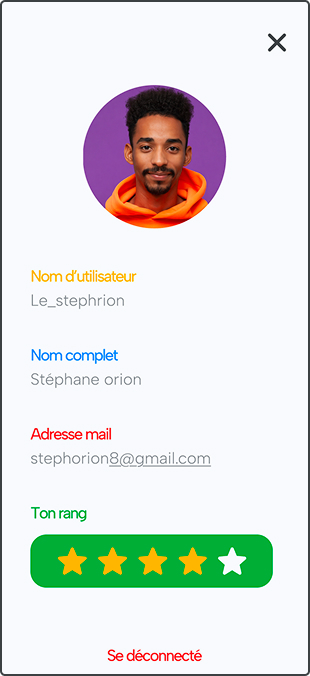
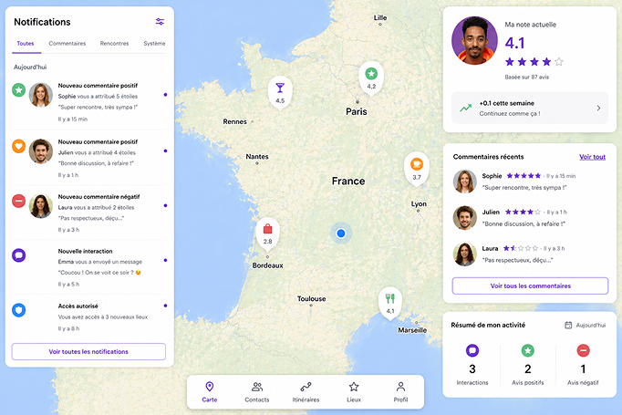
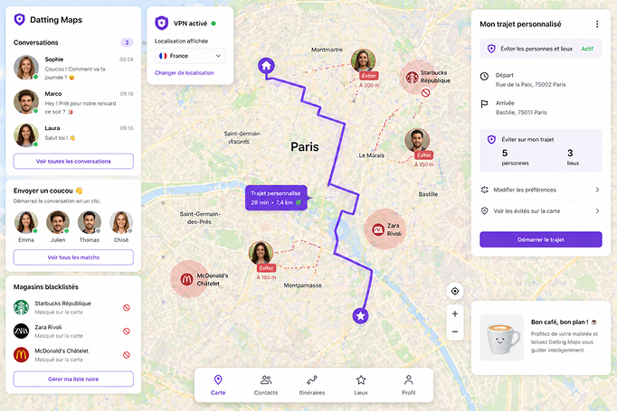
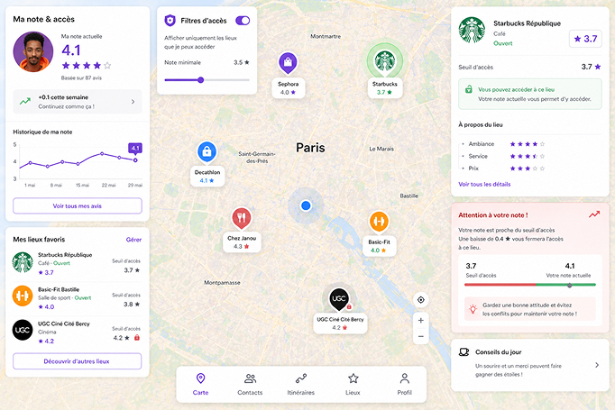

Découverte d'une extension
Bonjour, je m’appelle Stéphane Orion. Je suis un utilisateur qui possède 4 étoiles sur son compte. Depuis que Datting Maps a été ajouté sur nos machines via notre compte Google, j’ai d’abord été très sceptique. J’utilisais beaucoup Google Maps de base pour voir mes horaires de transport en commun ou même pour trouver des restaurants ou magasins à proximité qui m’intéressent. J’avais peur qu’avec l’ajout de l’extension, Google Maps perde tout son côté assistant géographique en plus de son GPS.
J’ai été surpris de voir que l’extension a pu compléter tout ceci en y ajoutant un côté social plus présent. J’ai découvert beaucoup de nouvelles personnes. Il m’est arrivé de faire quelques mauvaises rencontres, ce qui fait que j’ai 4 étoiles, mais je fais attention à garder une image passe-partout, ce qui me permet de conserver une excellente moyenne. Je suis uniquement refusé dans les restos et les magasins haut de gamme, qui ne m’intéressent de toute façon pas.

Utilisation type de Datting Maps
Début de la journée
Pour commencer, quand je me lève chaque matin, je regarde sur Google Maps si je n’ai pas reçu de notification ou si j’ai eu des commentaires positifs ou négatifs à mon égard. Ca me permet de faire un tri dans mes rencontres avec les utilisateurs et savoir ou non si je dois en mettre dans la black-list.

Milieu de la journée
Ensuite, j’envoie un coucou aux personnes avec qui je parle en ce moment via Datting Maps et, pendant mon café, je fais mon trajet personnalisé pour éviter les personnes que je n’ai pas envie de croiser sur ma route. J’ai même blacklisté certains magasins pour ne plus les voir sur la carte, afin d’éviter de croiser ces personnes-là au même endroit.

Avant la fin de journée
Je regarde ensuite si ma moyenne n’a pas baissé pour éviter de devoir modifier mes endroits favoris où aller, comme le Starbucks à côté de chez moi, qui nécessite 3,7 étoiles pour y accéder. Les étoiles de ce genre d’endroit sont assez faciles à atteindre, mais il suffit d’une gaffe et on peut descendre très vite et ne plus y avoir accès. Je suis tombé pile 4 étoiles quand je me suis pris la tête avec un serveur au restaurant la semaine dernière. La fille avec qui j’étais en date n’a pas apprécié et m’a mis 2 étoiles en laissant un commentaire sur mon profil.

Voici le commentaire
Je suis allée hier soir au restaurant avec un garçon du nom de Stéphane, très gentil aux premiers abords. Tout se passait bien, mais lorsque le serveur a fait tomber un peu d’eau sur Stéphane, il s’est mis en colère auprès du serveur et a demandé de se faire rembourser son eau qu’il allait déjà payer 2,50 €. J’ai trouvé cet excès de colère très inapproprié à la situation. Je suis partie directement après. Pour cet événement, je mets cette note de 2 étoiles, car hormis ceci, ça s’est bien passé, mais je ne fréquente pas de personnes colériques dans la vie, désolée.
Fin de la journée
Après le travail, je fais les courses, où les achats dépendent des étoiles : les grandes marques sont réservées aux mieux notés. J’ai encore assez d’étoiles pour choisir, contrairement à d’autres qui doivent se limiter à des sous-marques. Avant de dormir, je vérifie mes notifications, surtout avec Létitia que je rencontre demain via Datting Maps. J’espère que ça se passera mieux qu’au restaurant et je dois faire attention à mon comportement pour ne pas perdre d’étoiles.

Reprenons avec moi
Grâce au témoignage de Stéphane, on peut voir une utilisation des plus classiques de Datting Maps : parler à des personnes, faire des rendez-vous, personnalisé des trajets, voir les endroits où l’on peut toujours aller ou non, consulter les commentaires reçus de personnes avec qui on s’est ajouté sur Datting Maps, etc.
Pas simple de garder un haut classement d’étoiles, ce qui mène à notre troisième étape, parlera des dérives que peut apporter Datting Maps, des comptes avec peu d’étoiles.
Rubrique suivante
Les opinions